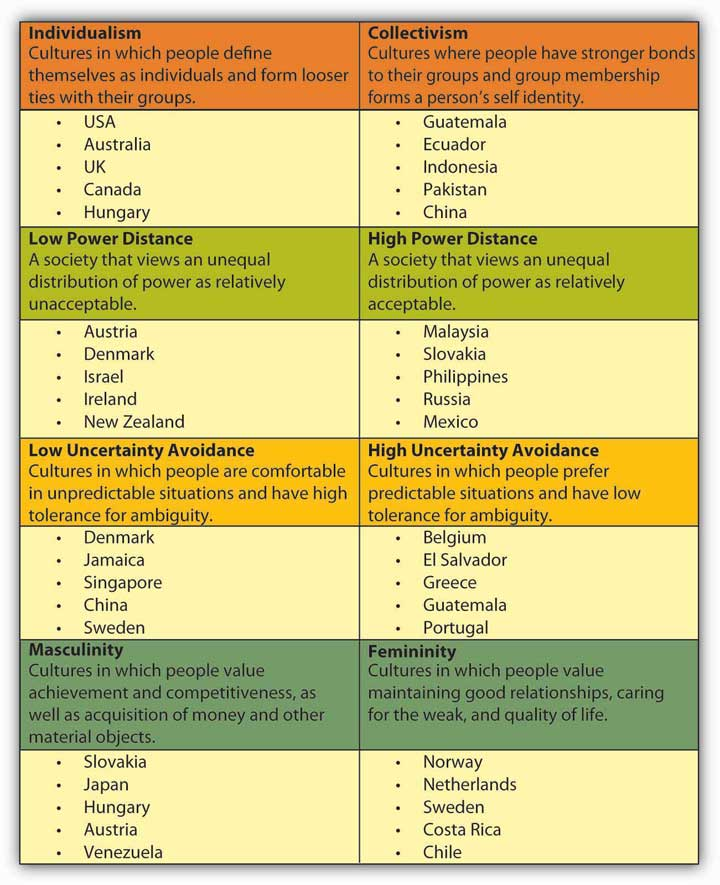

CultureThe values, beliefs, and customs that exist in a society. refers to values, beliefs, and customs that exist in a society. In the United States, the workforce is becoming increasingly multicultural, with close to 16% of all employees being born outside the country. In addition, the world of work is becoming increasingly international. The world is going through a transformation in which China, India, and Brazil are emerging as major players in world economics. Companies are realizing that doing international business provides access to raw materials, resources, and a wider customer base. For many companies, international business is where most of the profits lie, such as for Intel Corporation, where 70% of all revenues come from outside the United States. International companies are also becoming major players within the United States. For example, China’s Lenovo acquired IBM’s personal computer business and became the world’s third largest computer manufacturer.Frauenheim, E. (2005). Crossing cultures. Workforce Management, 84(13), 1–32. As a result of these trends, understanding the role of national culture for organizational behavior may provide you with a competitive advantage in your career. In fact, sometime in your career, you may find yourself working as an expatriate. An expatriateSomeone who is temporarily assigned to a position in a foreign country. is someone who is temporarily assigned to a position in a foreign country. Such an experience may be invaluable for your career and challenge you to increase your understanding and appreciation of differences across cultures.
How do cultures differ from each other? If you have ever visited a country different from your own, you probably have stories to tell about what aspects of the culture were different and which were similar. Maybe you have noticed that in many parts of the United States people routinely greet strangers with a smile when they step into an elevator or see them on the street, but the same behavior of saying hello and smiling at strangers would be considered odd in many parts of Europe. In India and other parts of Asia, traffic flows with rules of its own, with people disobeying red lights, stopping and loading passengers in highways, or honking continuously for no apparent reason. In fact, when it comes to culture, we are like fish in the sea: We may not realize how culture is shaping our behavior until we leave our own and go someplace else. Cultural differences may shape how people dress, how they act, how they form relationships, how they address each other, what they eat, and many other aspects of daily life. Of course, talking about national cultures does not mean that national cultures are uniform. In many countries, it is possible to talk about the existence of cultures based on region or geography. For example, in the United States, the southern, eastern, western, and midwestern regions of the country are associated with slightly different values.
Thinking about hundreds of different ways in which cultures may differ is not very practical when you are trying to understand how culture affects work behaviors. For this reason, the work of Geert Hofstede, a Dutch social scientist, is an important contribution to the literature. Hofstede studied IBM employees in 66 countries and showed that four dimensions of national culture explain an important source of variation among cultures. Research also shows that cultural variation with respect to these four dimensions influence employee job behaviors, attitudes, well-being, motivation, leadership, negotiations, and many other aspects of organizational behavior.Hofstede, G. (1980). Culture and organizations. International Studies of Management & Organization, 10(4), 15–41; Tsui, A. S., Nifadkar, S. S., & Ou, A. Y. (2007). Cross-national, cross-cultural organizational behavior research: Advances, gaps, and recommendations. Journal of Management, 33, 426–478.
Figure 2.10
Hofstede’s culture framework is a useful tool to understand the systematic differences across cultures.
Source: Adapted from information in Geert Hofstede cultural dimensions. Retrieved November 12, 2008, from http://www.geert-hofstede.com/hofstede_dimensions.php.
Individualistic culturesCultures in which people define themselves as individuals and form looser ties with their groups. are cultures in which people define themselves as an individual and form looser ties with their groups. These cultures value autonomy and independence of the person, self-reliance, and creativity. Countries such as the United States, United Kingdom, and Australia are examples of individualistic cultures. In contrast, collectivistic culturesCultures where people have stronger bonds to their groups, and group membership forms a person’s self identity. are cultures where people have stronger bonds to their groups and group membership forms a person’s self identity. Asian countries such as China and Japan, as well as countries in Latin America are higher in collectivism.
In collectivistic cultures, people define themselves as part of a group. In fact, this may be one way to detect people’s individualism-collectivism level. When individualists are asked a question such as “Who are you? Tell me about yourself,” they are more likely to talk about their likes and dislikes, personal goals, or accomplishments. When collectivists are asked the same question, they are more likely to define themselves in relation to others, such as “I am Chinese” or “I am the daughter of a doctor and a homemaker. I have two brothers.” In other words, in collectivistic cultures, self identity is shaped to a stronger extent by group memberships.Triandis, H. C., McCusker, C., & Hui, H. C. (1990). Multimethod probes on individualism and collectivism. Journal of Personality and Social Psychology, 59, 1006–1020.
In collectivistic societies, family bonds are more influential in people’s daily lives. While individualists often refer to their nuclear family when thinking about their families, collectivists are more likely to define family in a broader sense, including cousins, uncles, aunts, and second cousins. Family members are more involved in each others’ lives. For example, in societies such as Iran, Greece, and Turkey, extended family members may see each other several times a week. In many collectivistic societies, the language reflects the level of interaction among extended family members such that there may be different words used to refer to maternal versus paternal grandparents, aunts, or uncles. In addition to interacting with each other more often, family members have a strong sense of obligation toward each other. For example, children often expect to live with their parents until they get married. In collectivistic countries such as Thailand, Japan, and India, choosing a career or finding a spouse are all family affairs. In these cultures, family members feel accountable for each others’ behavior such that one person’s misbehavior may be a cause of shame for the rest of the family.Hui, H. C., & Triandis, H. C. (1986). Individualism-collectivism: A study of cross-cultural researchers. Journal of Cross-Cultural Psychology, 17, 225–248. Understanding the importance of family in collectivistic cultures is critical to understanding their work behaviors. For example, one multinational oil company in Mexico was suffering from low productivity. When the situation was investigated, it became clear that the new manager of the subsidiary had gotten rid of a monthly fiesta for company employees and their families under the assumption that it was a waste of time and money. Employees had interpreted this to mean that the company no longer cared about their families.Raphael, T. (2001). Savvy companies build bonds with Hispanic employees. Workforce, 80(9), 19. In India, companies such as Intel organize “take your parents to work day” and involve parents in recruitment efforts, understanding the role of parents in the career and job choices of prospective employees.Frauenheim, E. (2005). Crossing cultures. Workforce Management, 84(13), 1–32.
Collectivists are more attached to their groups and have more permanent attachments to these groups. Conversely, individualists attempt to change groups more often and have weaker bonds to them. It is important to recognize that to collectivists the entire human universe is not considered to be their in-group. In other words, collectivists draw sharper distinctions between the groups they belong to and those they do not belong to. They may be nice and friendly to their in-group members while acting much more competitively and aggressively toward out-group members. This tendency has important work implications. While individualists may evaluate the performance of their colleagues more accurately, collectivists are more likely to be generous when evaluating their in-group members. Freeborders, a software company based in San Francisco, California, found that even though it was against company policy, Chinese employees were routinely sharing salary information with their coworkers. This situation led them to change their pay system by standardizing pay at job levels and then giving raises after more frequent appraisals.Frauenheim, E. (2005). Crossing cultures. Workforce Management, 84(13), 1–32; Hui, H. C., & Triandis, H. C. (1986). Individualism-collectivism: A study of cross-cultural researchers. Journal of Cross-Cultural Psychology, 17, 225–248; Javidan, M., & Dastmalchian, A. (2003). Culture and leadership in Iran: The land of individual achievers, strong family ties and powerful elite. Academy of Management Executive, 17, 127–142; Gomez, C., Shapiro, D. L., & Kirkman, B. L. (2000). The impact of collectivism and in-group/out-group membership on the evaluation generosity of team members. Academy of Management Journal, 43, 1097–1106.
Collectivistic societies emphasize conformity to the group. The Japanese saying “the nail that sticks up gets hammered down” illustrates that being different from the group is undesirable. In these cultures, disobeying or disagreeing with one’s group is difficult and people may find it hard to say no to their colleagues or friends. Instead of saying no, which would be interpreted as rebellion or at least be considered rude, they may use indirect ways of disagreeing, such as saying “I have to think about this” or “this would be difficult.” Such indirect communication prevents the other party from losing face but may cause misunderstandings in international communications with cultures that have a more direct style. Collectivist cultures may have a greater preference for team-based rewards as opposed to individual-based rewards. For example, in one study, more than 75% of the subjects in Philippines viewed team-based pay as fair, while less than 50% of the U.S.-based subjects viewed team-based rewards as fair.Kirkman, B. L., Gibson, B. C., & Shapiro, D. L. (2001). Exporting teams: Enhancing the implementation and effectiveness of work teams in global affiliates. Organizational Dynamics, 30, 12–29.
Power distanceThe degree to which the society views an unequal distribution of power as acceptable. refers to the degree to which the society views an unequal distribution of power as acceptable. Simply put, some cultures are more egalitarian than others. In low power distance cultures, egalitarianism is the norm. In high power distance cultures, people occupying more powerful positions such as managers, teachers, or those who are older are viewed as more powerful and deserving of a higher level of respect. High power distance cultures are hierarchical cultures where everyone has their place. Powerful people are supposed to act powerful, while those in inferior positions are expected to show respect. For example, Thailand is a high power distance culture and, starting from childhood, people learn to recognize who is superior, equal, or inferior to them. When passing people who are more powerful, individuals are expected to bow, and the more powerful the person, the deeper the bow would be.Pornpitakpan, C. (2000). Trade in Thailand: A three-way cultural comparison. Business Horizons, 43, 61–70. Managers in high power distance cultures are treated with a higher degree of respect, which may surprise those in lower power distance cultures. A Citibank manager in Saudi Arabia was surprised when employees stood up every time he passed by.Denison, D. R., Haaland, S., & Goelzer, P. (2004). Corporate culture and organizational effectiveness: Is Asia different from the rest of the world? Organizational Dynamics, 33, 98–109. Similarly, in Turkey, students in elementary and high schools greet their teacher by standing up every time the teacher walks into the classroom. In these cultures, referring to a manager or a teacher with their first name would be extremely rude. High power distance within a culture may easily cause misunderstandings with those from low power distance societies. For example, the limp handshake someone from India may give or a job candidate from Chad who is looking at the floor throughout the interview are in fact showing their respect, but these behaviors may be interpreted as indicating a lack of confidence or even disrespect in low power distance cultures.
One of the most important ways in which power distance is manifested in the workplace is that in high power distance cultures, employees are unlikely to question the power and authority of their manager, and conformity to the manager will be expected. Managers in these cultures may be more used to an authoritarian style with lower levels of participative leadership demonstrated. People will be more submissive to their superiors and may take orders without questioning the manager.Kirkman, B. L., Gibson, B. C., & Shapiro, D. L. (2001). Exporting teams: Enhancing the implementation and effectiveness of work teams in global affiliates. Organizational Dynamics, 30, 12–29. In these cultures, people may feel uncomfortable when they are asked to participate in decision making. For example, peers are much less likely to be involved in hiring decisions in high power distance cultures. Instead, these cultures seem to prefer paternalistic leaders—leaders who are authoritarian but make decisions while showing a high level of concern toward employees as if they were family members.Javidan, M., & Dastmalchian, A. (2003). Culture and leadership in Iran: The land of individual achievers, strong family ties and powerful elite. Academy of Management Executive, 17, 127–142; Ryan, A. M., Farland, L. M., Baron, H., & Page R. (1999). An international look at selection practices: Nation and culture as explanations for variability in practice. Personnel Psychology, 52, 359–391.
Uncertainty avoidanceThe degree to which people feel threatened by ambiguous, risky, or unstructured situations. refers to the degree to which people feel threatened by ambiguous, risky, or unstructured situations. Cultures high in uncertainty avoidance prefer predictable situations and have low tolerance for ambiguity. Employees in these cultures expect a clear set of instructions and clarity in expectations. Therefore, there will be a greater level of creating procedures to deal with problems and writing out expected behaviors in manuals.
Cultures high in uncertainty avoidance prefer to avoid risky situations and attempt to reduce uncertainty. For example, one study showed that when hiring new employees, companies in high uncertainty avoidance cultures are likely to use a larger number of tests, conduct a larger number of interviews, and use a fixed list of interview questions.Ryan, A. M., Farland, L. M., Baron, H., & Page, R. (1999). An international look at selection practices: Nation and culture as explanations for variability in practice. Personnel Psychology, 52, 359–391. Employment contracts tend to be more popular in cultures higher in uncertainty avoidance compared to cultures low in uncertainty avoidance.Raghuram, S., London, M., & Larsen, H. H. (2001). Flexible employment practices in Europe: Country versus culture. International Journal of Human Resource Management, 12, 738–753. The level of change-oriented leadership seems to be lower in cultures higher in uncertainty avoidance.Ergeneli, A., Gohar, R., & Temirbekova, Z. (2007). Transformational leadership: Its relationship to culture value dimensions. International Journal of Intercultural Relations, 31, 703–724. Companies operating in high uncertainty avoidance cultures also tend to avoid risky endeavors such as entering foreign target markets unless the target market is very large.Rothaermel, F. T., Kotha, S., & Steensma, H. K. (2006). International market entry by U.S. Internet firms: An empirical analysis of country risk, national culture, and market size. Journal of Management, 32, 56–82.
Germany is an example of a high uncertainty avoidance culture where people prefer structure in their lives and rely on rules and procedures to manage situations. Similarly, Greece is a culture relatively high in uncertainty avoidance, and Greek employees working in hierarchical and rule-oriented companies report lower levels of stress.Joiner, A. (2001). The influence of national culture and organizational culture alignment on job stress and performance: Evidence from Greece. Journal of Managerial Psychology, 16, 229–243. In contrast, cultures such as Iran and Russia are lower in uncertainty avoidance, and companies in these regions do not have rule-oriented cultures. When they create rules, they also selectively enforce rules and make a number of exceptions to them. In fact, rules may be viewed as constraining. Uncertainty avoidance may influence the type of organizations employees are attracted to. Japan’s uncertainty avoidance is associated with valuing job security, while in uncertainty-avoidant Latin American cultures, many job candidates prefer the stability of bigger and well-known companies with established career paths.
Masculine culturesCultures that value achievement, competitiveness, and acquisition of money and other material objects. are cultures that value achievement, competitiveness, and acquisition of money and other material objects. Japan and Hungary are examples of masculine cultures. Masculine cultures are also characterized by a separation of gender roles. In these cultures, men are more likely to be assertive and competitive compared to women. In contrast, feminine culturesCultures that value maintaining good relationships, caring for the weak, and emphasizing quality of life. are cultures that value maintaining good relationships, caring for the weak, and emphasizing quality of life. In these cultures, values are not separated by gender, and both women and men share the values of maintaining good relationships. Sweden and the Netherlands are examples of feminine cultures. The level of masculinity inherent in the culture has implications for the behavior of individuals as well as organizations. For example, in masculine cultures, the ratio of CEO pay to other management-level employees tends to be higher, indicating that these cultures are more likely to reward CEOs with higher levels of pay as opposed to other types of rewards.Tosi, H. L., & Greckhamer, T. (2004). Culture and CEO compensation. Organization Science, 15, 657–670. The femininity of a culture affects many work practices, such as the level of work/life balance. In cultures high in femininity such as Norway and Sweden, work arrangements such as telecommuting seem to be more popular compared to cultures higher in masculinity like Italy and the United Kingdom.
With the globalizing economy, boundaries with respect to careers are also blurring. How can you prepare yourself for a career that crosses national boundaries?
With the increasing importance of international business as well as the culturally diverse domestic workforce, what can organizations do to manage cultural diversity?
Cultural intelligenceA person’s capability to understand how a person’s cultural background influences one’s behavior. is a person’s capability to understand how a person’s cultural background influences one’s behavior. Developing cultural intelligence seems important, because the days when organizations could prepare their employees for international work simply by sending them to long seminars on a particular culture are gone. Presently, international business is not necessarily conducted between pairs of countries. A successful domestic manager is not necessarily assigned to work on a long-term assignment in China. Of course such assignments still happen, but it is more likely that the employees will continually work with others from diverse cultural backgrounds. This means employees will not necessarily have to become experts in one culture. Instead, they should have the ability to work with people from many diverse backgrounds all at the same time. For these types of assignments, employees will need to develop an awareness of overall cultural differences and learn how to recognize cultural principles that are operating in different situations. In other words, employees will need to be selected based on cultural sensitivity and understanding and trained to enhance such qualities.Earley, P. C., & Mosakowski, E. (2004). Cultural intelligence. Harvard Business Review, 82(10), 139–146. For example, GlobeSmart by Aperian Global is an online tool that helps employees learn how to deal with people from around the world. The process starts by completing a survey about your cultural values, and then these values are compared to those of different cultures. The tool provides specific advice about interpersonal interactions with these cultures.Hamm, S. (2008, September 8). Aperian: Helping companies bridge cultures. Business Week Online. Retrieved January 29, 2009, from http://www.businessweek.com/technology/content/sep2008/tc2008095_508754.htm.
EthnocentrismThe belief that one’s own culture is superior to other cultures one comes across. is the belief that one’s own culture is superior to other cultures one comes across. Ethnocentrism leads organizations to adopt universal principles when doing business around the globe and may backfire. In this chapter, we highlighted research findings showing how culture affects employee expectations of work life such as work–life balance, job security, or the level of empowerment. Ignoring cultural differences, norms, and local habits may be costly for businesses and may lead to unmotivated and dissatisfied employees. Successful global companies modify their management styles, marketing, and communication campaigns to fit with the culture in which they are operating. For example, Apple Inc.’s famous PC versus Mac advertising campaign was reshot in Japan and the United Kingdom using local actors. The American ads were found to be too aggressive for the Japanese culture, where direct product comparisons are rare and tend to make people uncomfortable. The new ads feature more friendly banter and are subtler than the U.S. ads. For the British market, the advertisers localized the humor.Fowler, G. A., Steinberg, B., & Patrick, A. O. (2007, March 1). Mac and PC’s overseas adventures; globalizing Apple’s ads meant tweaking characters, clothing and body language. Wall Street Journal, p. B1.
When doing cross-cultural business, locals are a key source of information. To get timely and accurate feedback, companies will need to open lines of communication and actively seek feedback. For example, Convergys, a Cincinnati-based call-center company, built a cafeteria for the employees in India. During the planning phase, the Indian vice president pointed out that because Indian food is served hot and employees would expect to receive hot meals for lunch, building a cafeteria that served only sandwiches would create dissatisfied employees. By opening the lines of communication in the planning phase of the project, Convergys was alerted to this important cultural difference in time to change the plans.Fisher, A. (2005, January 24). Offshoring could boost your career. Fortune, 151(2), 36.
Cultures are not static—they evolve over the years. A piece of advice that was true 5 years ago may no longer hold true. For example, showing sensitivity to the Indian caste system may be outdated advice for those internationals doing business in India today.
When doing business internationally, failure may occur due to culture as well as other problems. Attributing all misunderstandings or failures to culture may enlarge the cultural gap and shift the blame to others. In fact, managing people who have diverse personalities or functional backgrounds may create misunderstandings that are not necessarily due to cultural differences. When marketing people from the United States interact with engineers in India, misunderstandings may be caused by the differences in perceptions between marketing and engineering employees. While familiarizing employees about culture, emphasizing the importance of interpersonal skills regardless of cultural background will be important.
With the increasing prevalence of international business as well as diversification of the domestic workforce in many countries, understanding how culture affects organizational behavior is becoming important. Individualism-collectivism, power distance, uncertainty avoidance, and masculinity–femininity are four key dimensions in which cultures vary. The position of a culture on these dimensions affects the suitable type of management style, reward systems, employee selection, and ways of motivating employees.